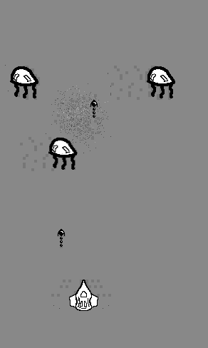
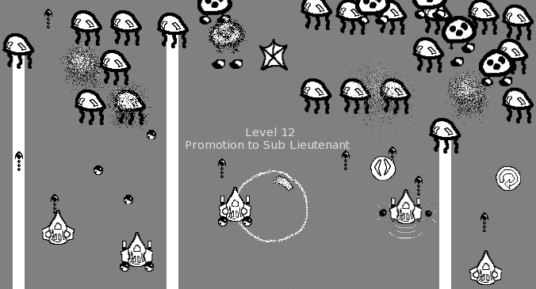

A mellow space shooter in shades of grey.
I started this game in 2005, during my first semester of university. It was my last Visual Basic game – once I started learning Java in semester 2, I used that for most of my games for the next few years.


Space Octopus Mono 0.1 (4 MB, Windows only, 1 or 2 player)
In 2010, I remade the game with the same name: Space Octopus Mono – the remake